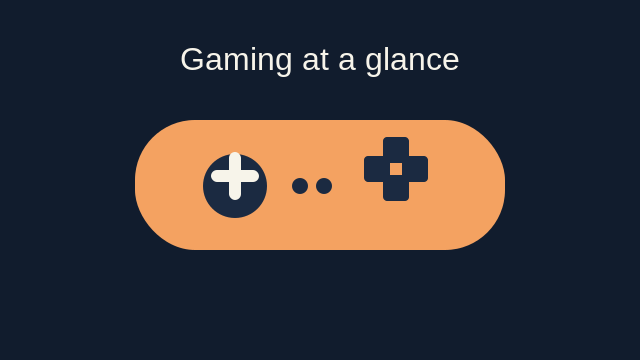
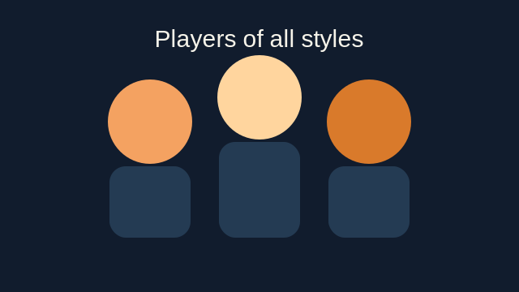
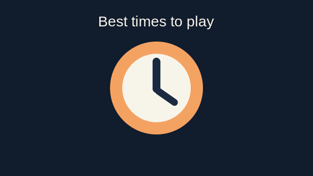
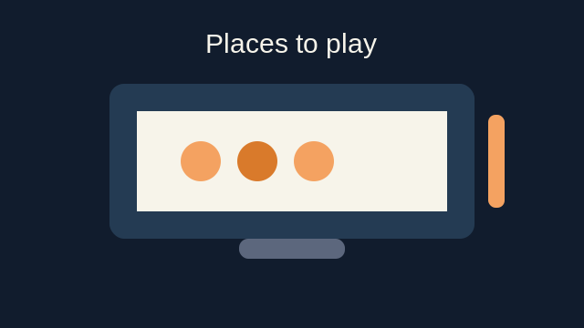
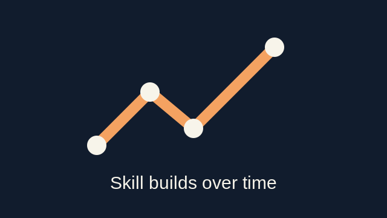
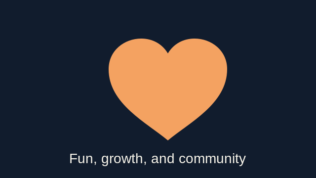

What
Video gaming is an interactive form of entertainment where players engage with virtual worlds through input devices like controllers, keyboards, or touch screens. Games range from fast-paced action shooters to slow, narrative-driven experiences.

The variety of gaming genres means there is truly something for everyone. Whether you prefer the strategy of a real-time tactics game, the immersion of an open-world RPG, or the quick reflexes demanded by a battle royale, the industry delivers.
- Action / Shooter — Call of Duty, Valorant, Apex Legends
- Role-Playing (RPG) — Elden Ring, Final Fantasy, The Witcher
- Strategy — Starcraft, Civilization, Age of Empires
- Sports & Racing — FIFA, Gran Turismo, Rocket League
- Puzzle / Indie — Celeste, Portal, Hades
- MMO / Online — World of Warcraft, League of Legends
Who
Gaming is for everyone. From casual mobile players squeezing in a quick match on a lunch break to competitive esports athletes training eight hours a day, the gaming community spans every age, background, and skill level.

Studies show that over 3 billion people worldwide play video games regularly. Gaming crosses cultural and generational gaps, with families playing together, friends competing online, and strangers forming lasting bonds over shared virtual adventures.
| Player Type | Style | Typical Platform |
|---|---|---|
| Casual | Relaxed, story-driven | Mobile, Console |
| Competitive | Ranked, team-based | PC, Console |
| Speedrunner | Completion time focus | PC, Emulator |
| Streamer | Content creation | PC, Console |
| Collector | Vintage & rare titles | Retro Hardware |
When
Gaming fits into every schedule. Some players carve out a dedicated two-hour session each evening, while others grab ten minutes during a commute. Peak online hours typically fall between 7 PM and midnight in any given time zone, when servers are most active.

Weekend mornings and late-night sessions are popular for longer gaming marathons — raids, ranked queues, or finishing a story arc. Many competitive players treat their schedule like an athlete, blocking out consistent daily practice windows.
| Day Type | Average Session Length | Peak Activity Window |
|---|---|---|
| Weekday | 1 – 2 hours | 7 PM – 11 PM |
| Weekend | 3 – 5 hours | 10 AM – 2 AM |
| Holiday / Break | 6+ hours | All day |
Where
Games are played across an enormous range of hardware and settings. A dedicated gaming PC setup with a high-refresh monitor and mechanical keyboard is the rig of choice for many competitive players, while consoles dominate the living room experience.

Cloud gaming is rapidly expanding where gaming can happen — a strong internet connection now turns a basic laptop or tablet into a capable gaming device, eliminating the need for expensive hardware.
- Gaming PC — highest performance, fully customizable
- Console (PlayStation / Xbox / Switch) — accessible, couch-friendly
- Mobile — play anywhere, huge global audience
- Cloud (GeForce NOW, Xbox Cloud) — stream games without local hardware
- Handheld (Steam Deck) — PC gaming on the go
How
Improving at gaming is a combination of deliberate practice, game-sense development, and physical conditioning. Top players review their own replays, study professional matches, and warm up consistently before competitive sessions.

Beyond raw mechanics, mental discipline — staying calm under pressure, communicating clearly with teammates, and adapting your strategy mid-match — is what truly elevates a player's performance.
| Skill Area | How to Improve |
|---|---|
| Aim & Accuracy | Aim trainers (Aim Lab, Kovaak's), sensitivity tuning |
| Game Sense | Watch pro VODs, review your own replays |
| Reaction Time | Consistent warm-ups, proper sleep & hydration |
| Teamwork | Communicate calmly, learn roles, play with a regular squad |
| Strategy | Study patch notes, adapt builds, experiment in scrimmages |
Why
People game for many reasons — entertainment, social connection, stress relief, creative expression, and even career opportunity. Gaming can foster deep friendships, sharpen problem-solving skills, and provide a genuine sense of achievement.

Research has linked moderate gaming with improved hand-eye coordination, faster decision making, and greater resilience when facing challenges. Games also provide safe spaces to explore narratives, emotions, and identities.
- 🎮 Entertainment — immersive stories and thrilling gameplay
- 👥 Social — guilds, squads, and lasting friendships
- 🧠 Mental Stimulation — strategy, problem solving, quick thinking
- 💪 Stress Relief — engaging distraction from daily pressures
- 🏆 Competition — ranked play, tournaments, esports careers
- 🌟 Creativity — game design, modding, world-building, streaming
AI Prompts
All images on this site were generated using AI image tools. The table below documents each image, the tool used, and the exact prompt that produced it so the process is fully transparent and reproducible.
| Section | Image File | AI Tool | Prompt Used |
|---|---|---|---|
| Who | players.png | ChatGPT / DALL·E | "A photorealistic illustration of a diverse group of gamers of different ages sitting together playing video games, warm lighting, community feel." |
| What | controller.png | ChatGPT / DALL·E | "A photorealistic close-up of a modern gaming controller resting on a dark surface with subtle blue ambient lighting, studio product shot." |
| When | clock.png | ChatGPT / DALL·E | "A photorealistic digital clock face with game controller icons in the background, glowing amber light, dark atmospheric setting." |
| Where | screen.png | ChatGPT / DALL·E | "A photorealistic gaming battlestation with a large curved monitor, RGB keyboard, and ambient purple and orange lighting in a dark room." |
| How | skills.png | ChatGPT / DALL·E | "A photorealistic infographic-style radial skill spider chart for a video game player showing attributes: Aim, Reaction Time, Game Sense, Teamwork, Strategy — dark background, orange accent lines." |
| Why | heart.png | ChatGPT / DALL·E | "A photorealistic glowing pixel-art heart floating in a dark game environment surrounded by small silhouetted game characters, warm amber glow, sense of belonging." |
Images were resized to a maximum display width of 720px and saved as PNG files to maintain aspect ratio and reduce page load times. All images follow a consistent photorealistic style throughout.